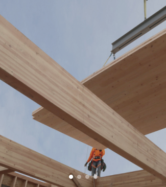

Bekijk de film
Bekijk de film
Duurzame materialen
Alle EcoCabins hebben een hoge isolatiewaarde, worden geproduceerd met indien mogelijk duurzame en/of natuurlijke materialen en hebben als opvallende uiterlijke kenmerk de ‘ronde hoeken’, mogelijk gemaakt door het specifieke materiaalgebruik. De voordelen van bouwen met hout zijn legio: hout is licht, flexibel, isoleert goed en bouwt snel en efficiënt.
Lees meer Innovatie
Wij hebben als doel om de EcoCabins voortdurend verder te ontwikkelen en innoveren, zodat de EcoCabins uiteindelijk 100% duurzaam en circulair zijn. Voorwaarde hierbij is dat de EcoCabins betaalbaar blijven. Met behulp van de zon, de wind en de beste isolatie geniet u van. Alle EcoCabins hebben een hoge isolatiewaarde, worden geproduceerd met indien mogelijk duurzame en/of natuurlijke materialen en hebben als opvallende uiterlijke kenmerk de ‘ronde hoeken’, mogelijk gemaakt door het specifieke materiaalgebruik De voordelen van bouwen.

Hout
De draagconstructies van EcoCabins bestaan uit hout. Hout is duurzaam en.
Afwerking
De draagconstructies van EcoCabins bestaan uit hout. Hout is duurzaam en.
Stalen onderstel
Het stalen onderstel is sterk zijn en heeft de benodigde stijfheid die
Glaswol isolatie
De combinatie van glaswol met een houtskelet constructie geeft een.
Triple glas
De combinatie van glaswol met een houtskelet constructie geeft een.
Infrarood vloer
De vloer wordt opgewarmd middels opgewekte warmte uit eigen zonne-energie.